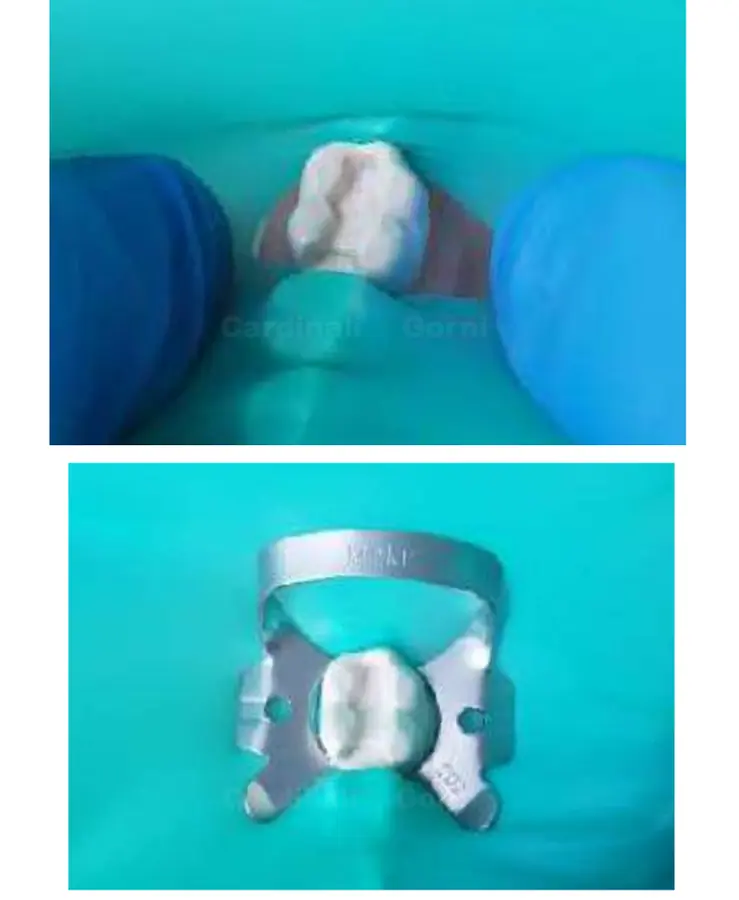

نسخه استخراجشده؛ ترجمه یا تأیید علمی انجام نشده است. وضعیت: captured
بیماری با حساسیت به لاتکس برای درمان ریشهی مولر اول بالا آمده است. دانشجو با ورق بدون لاتکس روش کلمپ اول را امتحان کرد؛ سوراخ هنگام رد شدن از روی کلمپ از هم باز شد و درز بزرگی ماند. با ورق تازه چه روشی را انتخاب کند؟

در روش ورق اول، اول ورق روی دندان مینشیند و بعد کلمپ روی ورق گذاشته میشود. این روش چهاردستی است.
دندانپزشک کنار بیمار میایستد، فورسپس آماده را در دست غالب میگیرد و انگشت اشارهی دست دیگر را یک طرف سوراخ میگذارد. دستیار انگشت اشارهاش را طرف دیگر سوراخ میگذارد و با دست دیگر گوشههای بالای ورق را نگه میدارد تا ورق تا نشود و جلوی دید را نگیرد.
دندانپزشک دستیار را به سمت دندان هدف هدایت میکند و بعد خودش کلمپ میکند.
روش ورق اول سریع و ایمن است: اگر کلمپ از فورسپس رها شود، روی ورق میافتد، نه در حلق.
نکتهی طلایی: شناسایی دندان و کلمپ کردن بیآسیب به بافت نرم کار خود دندانپزشک است و به دستیار سپرده نمیشود. دربارهی کشسانی ورق بدون لاتکس و اندازهی سوراخش دو دیدگاه هست؛ آنچه قطعی است این است که این ورق را با روش ورق اول بگذاری، نه با کلمپ اول که سوراخ را تا از هم پاشیدن ورق کش میدهد.